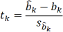
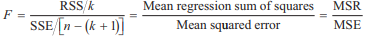

--------------------
Multiple Linear Regression
--------------------
Equation
Yi = b0 + ΣbkXki + εi
- 其中bk = regression coefficients, partial regression coefficients, partial slope coefficients
--------------------
回归系数的假设检验
--------------------
单一变量系数检验
t-test
- 检验其中一个自变量对方程因变量的解释程度
-

其中df=n-k-1
- 当t值超出±t临界值范围之外时拒绝原假设
p-value
回归系数置信区间
--------------------
回归整体假设检验
F-test

-
原假设H0: 所有bk=0
备择假设Ha: 至少有一个bk≠0
- F检验是单尾检验, 依据置信水平, 分子自由度, 分母自由度查到临界值
- 当F值大于Fc时, 拒绝原假设
--------------------
Adjusted R2
--------------------
--------------------
虚拟变量 Dummy Variables
--------------------
概念
- 虚拟变量是回归模型中自变量为定性变量, 只能取0或1
- 如果有n种情况, 则需要n-1个虚拟变量
--------------------
假设检验
t-test
- 对单个变量系数使用t检验
-
原假设H0: bi=0
备择假设Ha: bi≠0
--------------------
Next Chaptor